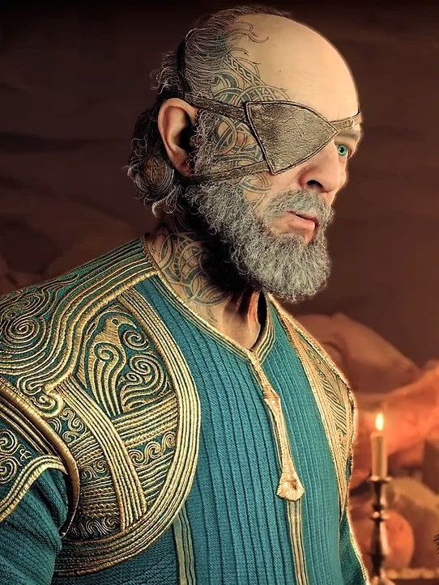

ODÍN
Odin , también conocido como el Padre de Todos , es el principal antagonista de la franquicia de la Era Nórdica de God of War . Está basado en la mítica figura nórdica del mismo nombre. Al igual que muchas de las figuras mitológicas griegas de la misma franquicia, es una figura mucho más siniestra, bárbara y cruel que su contraparte del mito clásico. Aunque nunca apareció físicamente en el juego de 2018, varios personajes como Atreus, Freya y Mimir lo mencionaron y hicieron referencia muchas veces como una deidad cruel, bárbara, hambrienta de poder y megalómana, y la responsable de tanto sufrimiento en todo el mundo. los nueve reinos.